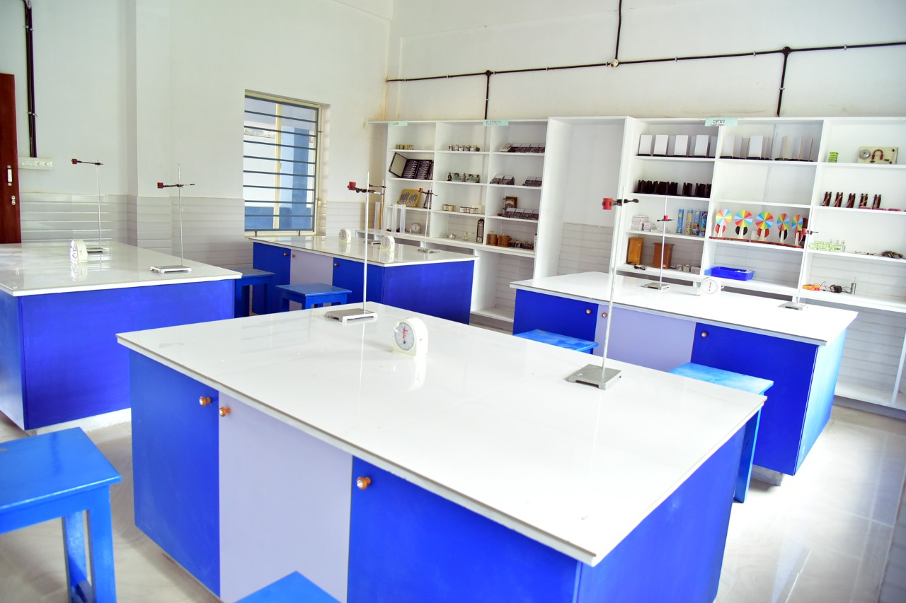
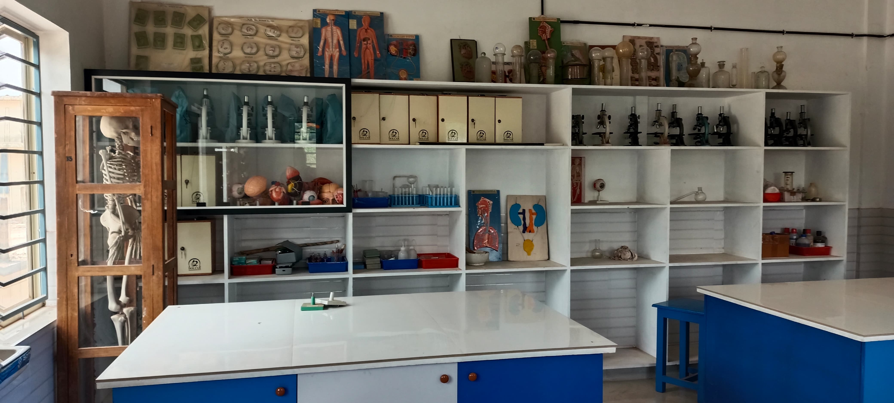

Our Academic Facilities
State-of-the-art infrastructure for comprehensive learning

Well-Stocked Library
Our library houses over 10,000 books, journals, and periodicals covering diverse subjects. With a dedicated reading area and digital resources, it serves as a knowledge hub for students and faculty alike. Regular book exhibitions and reading programs foster a love for literature and research.
Science Laboratories

Physics Lab
Equipped with modern apparatus for experiments in mechanics, optics, electricity, and thermodynamics. Students gain hands-on experience with practical applications of physics concepts.

Chemistry Lab
Fully equipped with safety measures for conducting experiments in organic, inorganic, and physical chemistry. Students learn proper laboratory techniques and safety protocols.

Biology Lab
Features microscopes, specimens, and models for studying botany, zoology, and human anatomy. Students develop scientific observation and analytical skills.